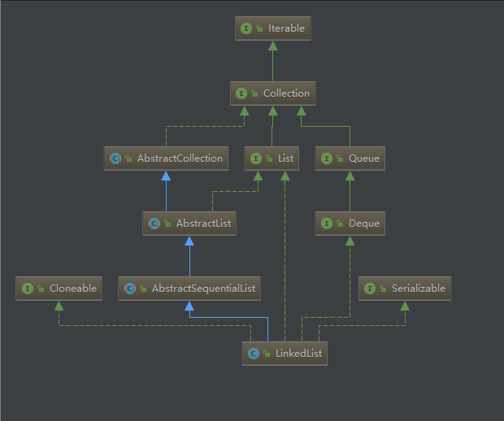

LinkedList简介
LinkedList是一个使用双向链表结构实现的容器，与ArrayList一样，它能动态扩充其长度，LinkedList相较于ArrayList，其任意位置插入速度比ArrayList要快，但是其查询速度要比ArrayList要慢；LinkedList继承自AbstractSequentialList，实现了List、Deque、Cloneable、Serializable接口。
LinkedList UML图如下：

和ArrayList一样，LinkedList也不是一个线程安全的容器。
LinkedList源码分析
构造方法
LinkedList有两个构造方法：
1 | public LinkedList() { |
addAll()方法：
1 | public boolean addAll(Collection<? extends E> c) { |
add方法
LinkedList也有两个add方法，如下：
1 | public boolean add(E e) { |
linkLast方法：
1 | void linkLast(E e) { |
linkBefore方法：
1 | void linkBefore(E e, Node<E> succ) { |
获取指定位置node指针方法node：
1 | Node<E> node(int index) { |
get方法
1 | public E get(int index) { |
get方法也比较简单，首先检测index是否溢出，然后直接找到index位置的元素，并返回其item。
本文首发于我在万达摆地摊's blog，转载请注明来源